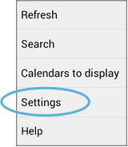
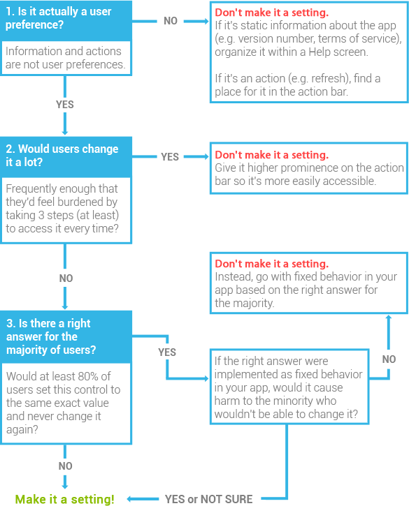

开发者文档
设置
用户可以在设置屏幕中调整偏好，改变应用的行为。用户可以从中受益，这是因为：
- 用户不用在某些重要的时刻被同样的问题一遍又一遍的打断。通过设置设定好在特定情况下的默认操作（参看设计原则：帮我做决定，但让我可以撤销它）。
- 用户能有归属感，觉得一切都在掌握之中（参看设计原则：让用户能个性化）。
Flow and Structure
在操作溢出菜单中提供设置的入口
设置按钮在用户界面中不是很重要，因为它不是经常用到。即使操作栏上有多余的空间，也不要让设置成为一个操作按钮。永远让它在操作溢出菜单中，命名为“设置”。将它排在所有项目后，但在“帮助”项之前。
不要把什么都放在设置里
因为设置总是在主界面之外，所以似乎放再多的东西也不会挤占用户界面的空间。这看起来是个好的消息，但是它也带来一个挑战。
设置看起来是一个堆放各种东西的地方，就像杂物间里面塞满了东西。你不会在那里花很多时间，所以似乎可以不用去仔细考虑项目的排列和摆放。但是用户虽然很少访问设置，但是仍然对于设置屏幕抱有很高的期待。过多的设置项表示用户要做出大量的选择，太多的选择则会使人失去方向。
所以不要让用户做出高难度的选择，而且仔细考虑是不是需要一个选项。对于设置中的一个选项，都应当按照下面的流程图仔细考虑：
如果你还是有一大堆设置项，那么分组是个好选择
人类能够短时间内记住的项目一般是 7±2 项。如果你给出了个超过 10 条项目的设置 (在通过上面的流程图筛选后)，用户会觉得难以浏览、理解和对它们做出选择。
你可以将这些设置分组，把长列表变成短列表。同一组中相似的选项以下面的某一种方式排列：
放在同一个分隔符下
放在另一个屏幕中
你可以任意组合使用上面两种分组方式来合理组织应用的设置项。
例如，安卓设置应用的主屏幕，每一个设置项都有对应的子屏幕。除此之外，设置项都通过分隔符分组。
分组不是一门精确的科学，但是基于应用中设置的数量还是有一些指导方法可以参考。
少于 7 项
完全不需要分组。用户不会觉得变得更简单了。
8 到 10 项
试着通过一两个分隔符分组。如果有的选项看起来比较独立，和其它的没有什么联系，那么可以按照以下的方案分组：
- 如果是比较重要的选项，直接把它们放在设置屏幕的最顶端。
- 否则在最下面用一个叫“其他”的分组摆放它们。
11 到 15 项
类似上面的规则，试着用 2 到 4 个分隔符分组。
通过以下方法来减少分组数量：
- 如果有多于 2 个选项是给高级用户的，将这些设置移出主设置屏幕，放到“高级”子屏幕在操作溢出项同时添加一个“高级”项目，也导航到这个屏幕。
- 找出“双面选项”，两个设置互相相关，但又和其它设置没什么联系。试着使用下面介绍的设计模式，将它们合并成一个设置项。例如你可以把两条有联系的单选项合并为一个多选项。
16 项及更多
如果你有 4 个以上相关的设置项，将它们组合成一个次级屏幕。然后使用上面的建议降低列表长度。
设计模式
复选框
只有选中或者不选中两种状态的选项。
多选
选项给出多个离散的可选值，但是用户只能选择其中的一个。
滑块
用户在一个连续的可选值之中选择一个的选项。
日期 / 时间
用户选择一个日期或者时间的选项。
子屏幕导航
将用户带入一个选项的子屏幕或者一个更复杂的设置页面。
- 如果只有一个子屏幕，应当使用和进入该屏幕的按钮相同的标题文字。
- 如果进入的是一个向导的第一页，则使用第一步的名称作为标题。
列表子屏幕
列出一个选项包含的一个可选列表。
在标题中显示选项的名称，副标题显示当前的状态（在这个例子里，状态由标签右侧的图标表示）。与该选项相关的操作显示在操作栏而不是列表中。
主通/断开关
用于控制整个选项的开关。
一个通/断开关放在操作栏或者子屏幕的第一项。如果关闭开关，列表消失，显示一段提示文字。所有需要打开开关才能进行的操作全部都显示为禁用状态。
你也可以将开关放置在进入列表子屏幕的按钮旁边。但是只有当用户很少访问子屏幕的情况才使用这个模式，一旦用户设置完毕他们一般只想切换开关状态。
独立的通/断开关
当比使用一个复选框还需要更仔细的描述时，为一个单独的设置项使用这个模式。
通/断开关只有在子屏幕出现，这样用户只有在看到描述文件后才能切换开关状态。描述性文字出现在设置标签下面，用来描述当前选项。
在这个例子里，Android Beam 默认启动。因为用户可能不知道这个选项是什么意思，我们要让这个状态描述的更详细，而不只是“启动”这个状态。
依赖
一个选项的可用状态依赖于另一个选项的设置。
将选项放置在其依赖选项的下面。如果选项被依赖项禁用，显示“不可用”，如果需要，显示一个简要的说明。
如果有多于 3 个选项依赖同一个选项，考虑使用子屏幕，并且使用主开关控制这些选项。
默认值
仔细考虑每一个选项的默认值。因为每个选项都会影响应用的行为，默认值将会影响用户对应用的第一印象。尽管用户可以调整选项，但是他们仍然希望应用能够提供一个正确的起始状态。你可以通过以下的步骤来考虑默认值：
- 如果没有默认值，用户最倾向于选择哪个值？
- 哪个值是中性的？
- 哪个值最没有风险，最没有争议，最不过分？
- 哪个值消耗最少的电量和最少的数据流量？
- 哪个值最符合设计原则不要弄丢用户的东西？
- 哪个值最符合设计原则只有在重要的时候打断用户？
写作指南
标签要清晰简明
写出一个好的标签是有难度的，因为空间有限。你只有一行的空间，而且在最小的设备上，它会非常的短。按照下面的指导，帮助你写出简明、有意义能够快速浏览的标签:
- 用一般句式书写标签 (例如只有第一个字母和特殊名词才大写)
- 不要在标签中使用指导性动词，比如“设置”、“修改”、“编辑”、“管理”、“使用”或者“选择”。因为用户已经知道他们在下面的选项中可以做出的调整。
- 同理，不要在标签中使用“...的设置”。它已经暗示了。
- 如果是一组设置中的一项，不要在标题中重复组名称或者子屏幕标题。
- 不要使用否定词作为标题开头。例如，“不允许”可以改为“阻止”。
- 不要使用特别技术的词语，除非您的目标用户都能够理解这个术语。尽量使用简单的动词和名词。
- 不要提及用户。比如选择通知的选项，标题应当是“通知”，而不是“提醒我”。
当您确定好标题后，请在LDPI 手持设备的竖屏上测试一下，确保在任何设备上都能够正确显示。
副标签文字是用来表示状态，而不是用来写详细描述的…
在 ICS 系统发布以前，我们喜欢在副文字标题中写一些详细的描述信息。但是从 ICS 开始，副文字标题用来描述当前的状态。
| 屏幕超时 |
|---|
| 调整屏幕自动锁定前的延迟 |
| 休眠 |
|---|
| 无操作 10 分钟后 |
在副标签文字中描述状态有如下好处：
- 用户可以一眼看到设置的当前值是什么，而不需要进一步浏览。
- 它遵守设计原则保持简单，这是用户所喜欢的。
…除非它是一个复选框设置项
有一个重要的使用副标签表状态的特例：复选框设置项。这里，使用副标签文本来描述设置，而不是状态。复选框的状态没有必要，因为它本身已经说明当前状态。在复选框选项下适合描述该选项的原因是 -- 不像其它控件，复选框无法导航到一个对话框或者一个子屏幕，所以没有其它地方放置详细描述了。
因此，如果复选框选项的标签已经足够描述设置的目的，那么就没有必要再提供更详细的描述了。只有在必要的时候添加详细描述。
写复选框设置项描述时遵守这些指南：
- 保持一句话之内，并且不在结尾使用标点符号。
- 假设单选框已经选中的情况，并且使用一个命令语句。例子："Allow data exchange"，而不是 "Allows data exchange"。
- 注意不要使用重复出现的词语。
- 除非理解设置必要，否则不要指代用户。
- 如果必须指代用户，使用第二人称（“你”）而不是第一人称（“我”）。安卓向用户说明，而不是代表他们。
写作例子
以下的例子是我们在 ICS 设置应用中一些修改过的标题。
| 使用震动反馈 |
|---|
| 触摸时震动 |
|---|
这个单选框设置中，我们不再采用“使用”一词，并且重新编写了标题，使其更容易被用户理解。
| 屏幕超时 |
|---|
| 调整屏幕自动锁定前的延迟 |
| 休眠 |
|---|
| 无操作 10 分钟后 |
这个多选设置中，我们使用更友好的词语作为标题，并且用当前的状态代替了详细描述。并且我们不仅仅显示当前的值，还加上了些描述信息，防止用户以为是“休眠 10 分钟”。
| 设置屏幕锁定 |
|---|
| 使用图案、PIN 或密码锁定屏幕 |
| 屏幕锁定 |
|---|
| 图案 |
这个设置将用户导航到一个子屏幕，选择屏幕锁定的方式。我们不再采用“设置”一词，并且使用当前选择的值代替了详细描述。如果用户没有选择值，副标签将显示“无”。
| NFC |
|---|
| 使用近场通信读取和交换标签 |
| NFC |
|---|
| 当手机和其它设备触碰时，允许数据交换 |
这个单选框设置中，我们之前使用了过于技术性的描述，但是最后仍然保留了“NFC”作为标题，因为: (1) 我们找不到更加简明且正确替换词语 (2) 在未来的几年中，用户将会普遍了解这个术语的意思。
不过，我们重写了详细描述。让它不再像以前一样充满了技术细节，而是更多的描述 NFC 的用途。我们不再描述 NFC 代表的意思，因为对于大多数用户来说根本没有意义，而且还占地方。
重点
确保每个选项都值得放置在设置屏幕中。
如果您有多于 7 个选项，将它们分组。
使用上面的设计模式指导，使用户不会面临陡峭的学习曲线。
选择安全、中性的、适合大多数用户的默认值。
为每个设置提供一个清晰而明确的标题，并且编写合适的副标题内容。